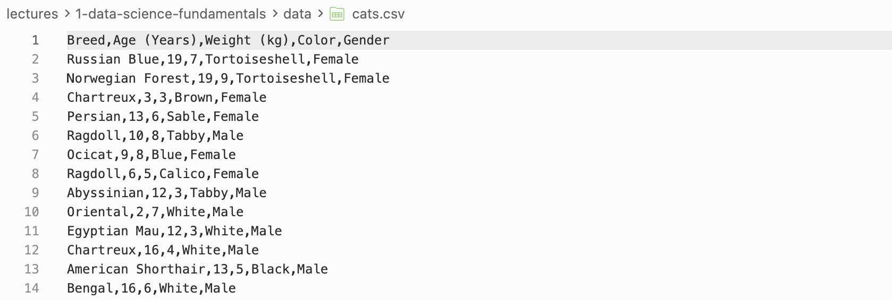
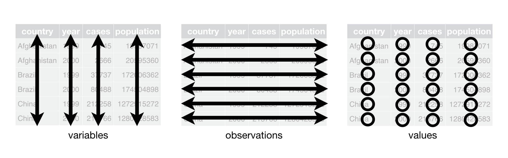

![]()
| points | assists | rebounds | |
|---|---|---|---|
| team | |||
| A | 88 | 12 | 22 |
| B | 91 | 17 | 28 |
| C | 99 | 24 | 30 |
| D | 94 | 28 | 31 |
Lecture 2: Data Structure
PSTAT100: Data Science - Concepts and Analysis
April 7, 2026
🚁 Overview
Aims of the lecture
- Introduce data handling in Python.
numpyarrays.pandasDataFrames.
- Data Structures.
- Wide vs Long.
- Converting between long and wide data structures.
pd.meltandpd.pivot.
- Tidy Data.
- Tidy Data Principles.
Data in Python
🐍 Python Basics
Python Variables
Python is a general purpose programming language.
Python natively stores data in variables of different types:
- Strings (
str) - text data. - Integers (
int) - whole numbers. - Floating point numbers (
float) - decimal numbers. - Booleans (
bool) - true/false values. - Lists (
list) - ordered collections of data. - Dictionaries (
dict) - key-value pairs. - Tuples (
tuple) - ordered, immutable collections of data. - Sets (
set) - unordered collections of unique data.
- Strings (
Packages such as
pandasandnumpyprovide additional data types and functions for working with data such as:- Pandas DataFrames (
.DataFrame) - tabular data. - Numpy arrays (
.array) - numerical data.
- Pandas DataFrames (
Python Syntax
Built-in Data Types
my_string = "Hello, World!"
my_integer = 10
my_float = 3.14
my_boolean = True
my_list = [1, 2, 3, 4, 5]
my_tuple = (1, 2, 3, 4, 5)
my_set = {1, 2, 3, 4, 5}
my_dict = {"name": "John", "age": 30}
item_list = [my_string, my_integer, my_float, my_boolean,
my_list, my_tuple, my_set, my_dict]
for item in item_list:
print(type(item), ":", item)<class 'str'> : Hello, World!
<class 'int'> : 10
<class 'float'> : 3.14
<class 'bool'> : True
<class 'list'> : [1, 2, 3, 4, 5]
<class 'tuple'> : (1, 2, 3, 4, 5)
<class 'set'> : {1, 2, 3, 4, 5}
<class 'dict'> : {'name': 'John', 'age': 30}- Built-in data types have limitations:
- Scalability (inefficient memory usage).
- Functionality (e.g. vector operations, manipulation).
NumPy
NumPy Arrays
- Numpy arrays are \(n\)-dimensional arrays of homogeneous data.
- Vectorized operations.
- Efficient memory usage.
- Make sure you are familiar with the basics of NumPy arrays:
- Construction:
array,linspace,full, etc. - Indexing / Slicing.
- Broadcasting.
- Construction:
Pandas DataFrames
🐼 What is Pandas?
- Pandas is a library for data manipulation and analysis.
- Provides data structures and functions for working with tabular data.
- Built on top of NumPy.
Pandas DataFrames
- Pandas DataFrames are 2-dimensional tabular data structures with labeled rows and columns.
- They are similar to NumPy arrays but with labeled axes.
- They are similar to dictionaries but with labeled columns.
📂 Loading Data Files
Data Formats
- In this course we will primarily use tabular data stored in the following file formats:
- Text files (
.txt) - simplest format but with loading challenges - Comma Separated Values files (
.csv) - most common format. - Tab Separated Values files (
.tsv) - similar to CSV but uses tabs instead of commas. - Excel files (
.xlsx) - spreadsheets with complex formulas and formatting.
- Text files (

Loading .csv files and .xlsx files
.csv files
.csvfiles are comma separated values files and are commonly used to store tabular data.- To load a
.csvfile we can use thepd.read_csvfunction.
.xlsx files
.xlsxfiles are Excel files and are commonly used to store tabular data.- To load a
.xlsxfile we can use thepd.read_excelfunction.
OrderDate Region Rep Item Units Unit Cost Total
0 2024-01-06 East Jones Pencil 95 1.99 189.05
1 2024-01-23 Central Kivell Binder 50 19.99 999.50
2 2024-02-09 Central Jardine Pencil 36 4.99 179.64
3 2024-02-26 Central Gill Pen 27 19.99 539.73
4 2024-03-15 West Sorvino Pencil 56 2.99 167.44⋙ Dataframe Basics
Manipulation and Indexing
- There are many ways we can manipulate dataframes including:
- Finding dataframe information with functions like
columns,index,shape,head,tail, etc. - Indexing / Slicing / Filtering. (
.loc,.iloc) - Adding / Removing columns and rows. (
.drop,.dropna,.insert,.concat) - Sorting. (
.sort_values,.sort_index)
- Finding dataframe information with functions like
Breed Color
0 Russian Blue Tortoiseshell
1 Norwegian Forest Tortoiseshell
2 Chartreux Brown
3 Persian Sable
4 Ragdoll Tabby
Breed Age (Years) Weight (kg) Color Gender
3 Persian 13 6 Sable Female
4 Ragdoll 10 8 Tabby Male🏢 Data Structure
🏗️ Different Data Structures
Often two data sets can have the same semantics but different data structures.
Data structures can be broadly categorized into two types:
- Wide data structure:
- One row per subject.
- Repeated measurements are in separate columns.
- Long data structure:
- One row per measurement.
- There is a column identifying which variable was measured
↔︎️ Wide Data Structure
Let’s build some intuition…
- To build our intuition let’s create a copy of the data set used by Luke Bennett.
- The data set contains the points, assists and rebounds of 4 basketball teams.
- ❓ Have a go at making this dataframe in python using
pd.DataFrame.
- Each observation (team) is on its own row.
- Each observation has multiple variables in separate columns.
↕️ Long Data Structure
What is a long data structure?
- What would this data look like in a long data structure?
| statistic | value | |
|---|---|---|
| team | ||
| A | points | 88 |
| A | assists | 12 |
| A | rebounds | 22 |
| B | points | 91 |
| B | assists | 17 |
| B | rebounds | 28 |
- We observe now that:
- Each measurement has its own row (
value) - There is a column identifying which variable was measured (
statistic)
- Each measurement has its own row (
Long vs Wide Data Structure
🤔 Which is better?
- Wide data is more human-readable:
- Common in spreadsheets
- Long data is more computer-readable:
- Required by most plotting libraries (
seaborn,ggplotinR) - Easier to filter, group, and aggregate in
pandas.
- Required by most plotting libraries (
- It is therefore important to be able to convert between the two data structures.
pd.melt
pd.melt - Wide → Long
pd.meltis a function that converts a wide data structure to a long data structure.- It takes the following arguments:
id_varsare the columns that identify the subject.var_nameis the name of the column that will contain the variable names.value_nameis the name of the column that will contain the variable values.
team statistic value
0 A points 88
1 B points 91
2 C points 99
3 D points 94
4 A assists 12
5 B assists 17
6 C assists 24
7 D assists 28
8 A rebounds 22
9 B rebounds 28
10 C rebounds 30
11 D rebounds 31pd.pivot
pd.pivot - Long → Wide
pd.pivotis a function that converts a long data structure to a wide data structure.- It takes the following arguments:
indexis the column that will contain the subject identifiers.columnsis the column that will contain the variable names.valuesis the column that will contain the variable values.
Lack of Standard Format
Which do you prefer?
- Difficult to say why one layout might be preferable.
- Most data is stored in a layout that made intuitive sense to the creator.
- 🙂↔︎️ Idiosyncratic and unprincipled.
- Few widely used conventions
- Lots of variability ‘in the wild’
Consequences for Data Scientists
- Data scientists must determine how best to reorganize datasets.
- Broadly, this involves two interdependent choices:
- Choice of representation: how to encode information.
- Dates as one or three variables?
- Use values 1, 2, 3 or ‘low’, ‘med’, ‘high’?
- Choice of form: how to display information
- Wide table or long table?
- One table or many?
What’s the solution?
🧹Tidy Data Standard
Data scientists introduced the tidy data standard to help solve the problem of inconsistent data structures.
It has two main advantages:
- Facilitates workflow by establishing a consistent dataset structure.
- Principles are designed to make transformation, exploration, visualization, and modeling easy.
Tidy Data
Tidy Data Principles
What is tidy data?
“Tidying your data means storing it in a consistent form that matches the semantics of the dataset with the way it is stored. In brief, when your data is tidy, each column is a variable, and each row is an observation. Tidy data is important because the consistent structure lets you focus your struggle on questions about the data, not fighting to get the data into the right form for different functions.” - Wickham and Grolemund, R for Data Science, 2017.
Tidy = Semantics and Structure
- A dataset is a collection of values which is said to have:
- Semantics: Meaning of each value
- Structure: How values are arranged
- The tidy standard: data semantics \(\leftrightarrow\) data structure
🧹 Tidy Data Standard
Tidy Data Definition
Tidy Data Standard
For data to be tidy, it must satisfy the following three rules:
- Each variable is a column.
- Each observation is a row.
- Each type of observational unit forms a table.

Tidy or Not - Example 1
Is this tidy?
- For our first example let’s look at World Bank data on annual GDP growth.
- We load this data from a
.csvfile usingpd.read_csv. - We look at the dimensions of the dataframe using
shape.
- We load this data from a
(264, 61)| Country Name | Country Code | 1961 | 1962 | 1963 | 1964 | 1965 | 1966 | 1967 | 1968 | ... | 2010 | 2011 | 2012 | 2013 | 2014 | 2015 | 2016 | 2017 | 2018 | 2019 | |
|---|---|---|---|---|---|---|---|---|---|---|---|---|---|---|---|---|---|---|---|---|---|
| 0 | Aruba | ABW | NaN | NaN | NaN | NaN | NaN | NaN | NaN | NaN | ... | -3.685029 | 3.446055 | -1.369863 | 4.198232 | 0.300000 | 5.700001 | 2.100000 | 1.999999 | NaN | NaN |
| 1 | Afghanistan | AFG | NaN | NaN | NaN | NaN | NaN | NaN | NaN | NaN | ... | 14.362441 | 0.426355 | 12.752287 | 5.600745 | 2.724543 | 1.451315 | 2.260314 | 2.647003 | 1.189228 | 3.911603 |
| 2 | Angola | AGO | NaN | NaN | NaN | NaN | NaN | NaN | NaN | NaN | ... | 4.403933 | 3.471976 | 8.542188 | 4.954545 | 4.822628 | 0.943572 | -2.580050 | -0.147213 | -2.003630 | -0.624644 |
| 3 | Albania | ALB | NaN | NaN | NaN | NaN | NaN | NaN | NaN | NaN | ... | 3.706892 | 2.545322 | 1.417526 | 1.001987 | 1.774487 | 2.218752 | 3.314805 | 3.802197 | 4.071301 | 2.240070 |
| 4 | Andorra | AND | NaN | NaN | NaN | NaN | NaN | NaN | NaN | NaN | ... | -1.974958 | -0.008070 | -4.974444 | -3.547597 | 2.504466 | 1.434140 | 3.709678 | 0.346072 | 1.588765 | 1.849238 |
5 rows × 61 columns
Compare Semantics and Structure
| Country Name | Country Code | 1961 | 1962 | 1963 | 1964 | 1965 | 1966 | 1967 | 1968 | ... | 2010 | 2011 | 2012 | 2013 | 2014 | 2015 | 2016 | 2017 | 2018 | 2019 | |
|---|---|---|---|---|---|---|---|---|---|---|---|---|---|---|---|---|---|---|---|---|---|
| 0 | Aruba | ABW | NaN | NaN | NaN | NaN | NaN | NaN | NaN | NaN | ... | -3.685029 | 3.446055 | -1.369863 | 4.198232 | 0.300000 | 5.700001 | 2.100000 | 1.999999 | NaN | NaN |
| 1 | Afghanistan | AFG | NaN | NaN | NaN | NaN | NaN | NaN | NaN | NaN | ... | 14.362441 | 0.426355 | 12.752287 | 5.600745 | 2.724543 | 1.451315 | 2.260314 | 2.647003 | 1.189228 | 3.911603 |
| 2 | Angola | AGO | NaN | NaN | NaN | NaN | NaN | NaN | NaN | NaN | ... | 4.403933 | 3.471976 | 8.542188 | 4.954545 | 4.822628 | 0.943572 | -2.580050 | -0.147213 | -2.003630 | -0.624644 |
| 3 | Albania | ALB | NaN | NaN | NaN | NaN | NaN | NaN | NaN | NaN | ... | 3.706892 | 2.545322 | 1.417526 | 1.001987 | 1.774487 | 2.218752 | 3.314805 | 3.802197 | 4.071301 | 2.240070 |
| 4 | Andorra | AND | NaN | NaN | NaN | NaN | NaN | NaN | NaN | NaN | ... | -1.974958 | -0.008070 | -4.974444 | -3.547597 | 2.504466 | 1.434140 | 3.709678 | 0.346072 | 1.588765 | 1.849238 |
5 rows × 61 columns
| Semantics | Structure | ||
|---|---|---|---|
| Observations: Variables: Observational units: |
Annual records GDP growth and year Countries |
Rows: Columns: Tables: |
Countries Value of year Just one |
- ❌ Rules 1 and 2 are violated since column names are values, not variables.
- Conclusion: No, this is not tidy. 👎
Tidy or Not - Example 1
Let’s see if we can make it tidy…
- The things we wish to change are:
- Set the index column to be country name using
set_index. - Drop the country code column (personal preference but superfluous) using
drop. - Melt the data so that year and growth rate are variables (columns), with one row per country per year, using
melt. - Sort the data by year and country name using
sort_values.
- Set the index column to be country name using
Were we successful?
| year | growth_pct | |
|---|---|---|
| Country Name | ||
| Afghanistan | 1961 | NaN |
| Albania | 1961 | NaN |
| Algeria | 1961 | -13.605441 |
| American Samoa | 1961 | NaN |
| Andorra | 1961 | NaN |
| Semantics | Structure | ||
|---|---|---|---|
| Observations: Variables: Observational units: |
Annual records GDP growth and year Countries |
Rows: Columns: Tables: |
Annual records GDP growth and year Just one |
- ✅ All three rules are satisfied. Rows are observations, columns are variables, and there is one unit type and one table.
- Conclusion: Yes, we were successful! 🎉
Conclusion
✅ What we covered
- Python data types, NumPy, and pandas.
numpyandpandas- Data Structure
- Wide vs Long
- Tidy Data
📅 What’s next?
- Detailed data preparation!